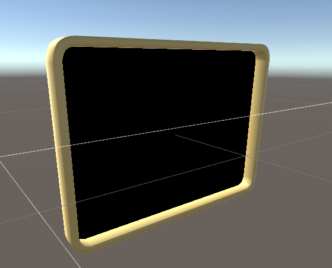
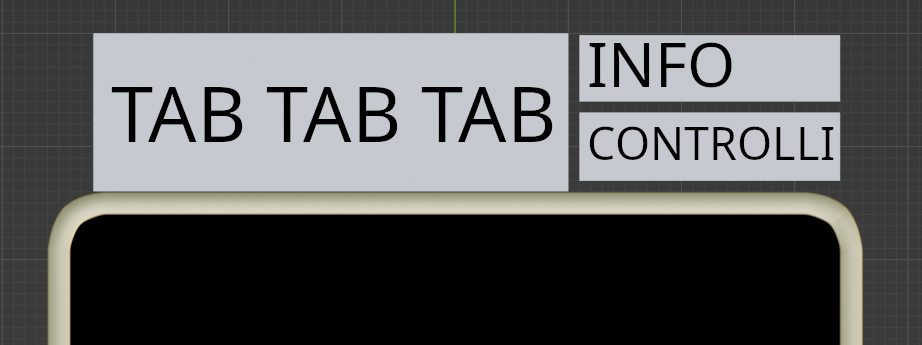
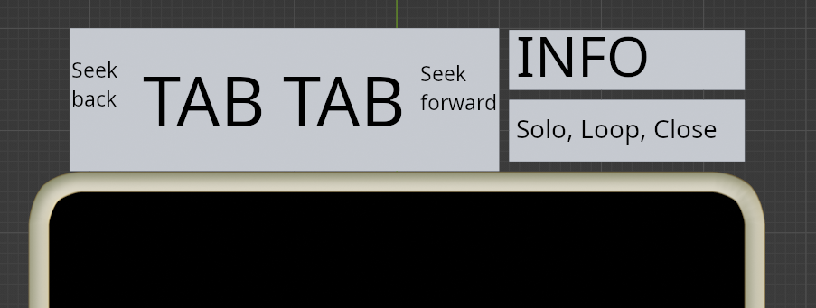

Dal momento che il tracciamento della cornice con N punti per ridondanza si e' rivelato un problema compelsso, ho scelto di introdurre una dipendenza ad una piccola libreria il cui scopo e' quello di trovare la matrice di trasformazione che meglio approssima la trasformazione dai punti attesi a quelli efettivi rivelati sulla cornice.
Ho creato un modello decente per la cornice, la superficie nera e' una maschera per indicare una superficie dove mostrare il mondo reale, come se fosse un portale. Lo specchio ha un bordo con padding di 1cm attorno a quello reale, in modo tale da cercare di mascherare i piccoli discostamenti tra la cornice reale e quella virtuale.
L'interazione si suddivide in due stadi, uno nel quale tramite, un menu a scorrimento, l'utente seleziona un tab da suonare, e una facciata successiva, dove dopo avere selezionato il tab, l'utente interagisce con l'interfaccia per suonare.
Il menu per la visione dei tab potrebbe essere strutturato nel seguente modo:
dove tab e' dove viene mostrata la tablatura, info mostra informazioni sullo stato del programma e i controlli potrebbero essere una fila di 5 bottoni: (in ordine)
Bisogna anche mettere da qualche parte un bottone per uscire al menu precedente, probabilmente si potrebbe mettere prendendo una parte del riquadro INFO.
In alternativa i controlli di seek potrebbero essere collocati ai lati del tab, lasciando spazio in controlli per altro:
Per facilitare l'utente nelle operazioni comuni, i controlli di start-pause e seek avanti/indietro di 1 bar potrebbero essere attaccati alla mano sinistra dell'utente, come mostrato sulla documentazione UltraLeap, cioe' il software di tracciamento delle mani in uso.
Dal momento che per la visualizzazione sto gia' utilizzando un simil-MVC, vale la pena espandere questo tipo di modello per unificare l'interazione.
Per le icone penso di utilizzare le icone Material di Google, mentre per per il font pensavo a Roboto (anche questo di Google).